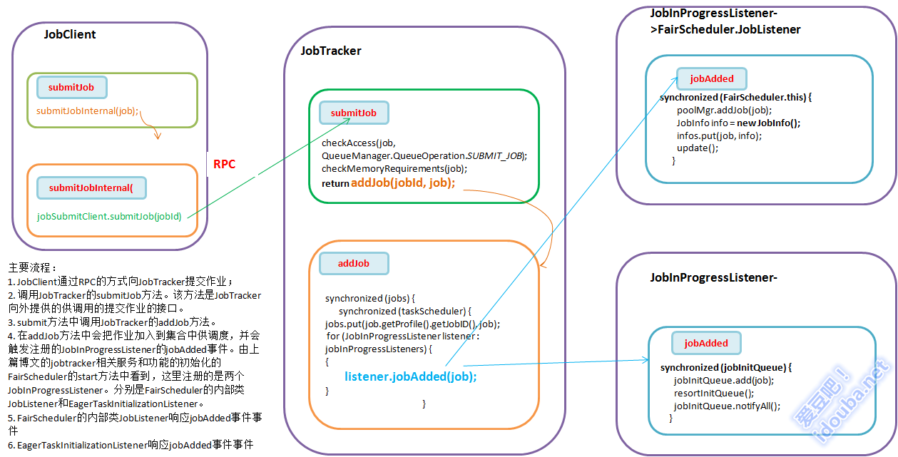

【hadoop代码笔记】hadoop作业提交之JobTracker接收作业提交
一、概要描述
在上一篇博文中主要描述了JobTracker接收作业的几个服务（或功能）模块的初始化过程。本节将介绍这些服务（或功能）是如何接收到提交的job。本来作业的初始化也可以在本节内描述，但是涉及到JobInProgress的初始化过程放在一张图上太拥挤，就分开到下一篇文章中描述。
二、 流程描述
- JobClient通过RPC的方式向JobTracker提交作业；
- 调用JobTracker的submitJob方法。该方法是JobTracker向外提供的供调用的提交作业的接口。
- submit方法中调用JobTracker的addJob方法。
- 在addJob方法中会把作业加入到集合中供调度，并会触发注册的JobInProgressListener的jobAdded事件。由上篇博文的jobtracker相关服务和功能的初始化的FairScheduler的start方法中看到，这里注册的是两个JobInProgressListener。分别是FairScheduler的内部类JobListener和EagerTaskInitializationListener。
- FairScheduler的内部类JobListener响应jobAdded事件事件。只是为每个加入的Job创建一个用于FairScheduler调度用的JobInfo对象，并将其和job的对应的存储在Map<JobInProgress, JobInfo> infos集合中。
- EagerTaskInitializationListener响应jobAdded事件事件。jobAdded 只是简单的把job加入到一个List类型的 jobInitQueue中。并不直接对其进行初始化，对其中的job的处理由另外线程JobInitManager来做。该线程，一直检查 jobInitQueue是否有作业，有则拿出来从线程池中取一个线程InitJob处理。关于作业的初始化过程专门在下一篇文章中介绍。

JobTracker接收作业提交
三、代码详细
1. JobClient的submitJob方法，调用submitJobInternal方法。
主要流程：
1）通过调用JobTracker的getNewJobId()向jobtracker请求一个新的作业ID
2）获取job的jar、输入分片、作业描述等几个路径信息，以jobId命名。
3）其中getSystemDir()是返回jobtracker的系统目录，来放置job相关的文件。包括：mapreduce的jar文件submitJarFile、分片文件submitSplitFile、作业描述文件submitJobFile
4）检查作业的输出说明，如果没有指定输出目录或输出目录以及存在，则作业不提交。参照org.apache.hadoop.mapreduce.lib.output.FileOutputFormat的checkOutputSpecs方法。如果没有指定，则抛出InvalidJobConfException，文件已经存在则抛出FileAlreadyExistsException
5）计算作业的输入分片。通过InputFormat的getSplits(job)方法获得作业的split并将split序列化封装为RawSplit。返回split数目，也即代表有多个分片有多少个map。详细参见InputFormat获取Split的方法。
6）writeNewSplits 方法把输入分片写到JobTracker的job目录下。
7）将运行作业所需的资源（包括作业jar文件，配置文件和计算所得的输入分片）复制到jobtracker的文件系统中一个以作业ID命名的目录下。
8） 使用句柄JobSubmissionProtocol通过RPC远程调用的submitJob()方法，向JobTracker提交作业。 JobTracker作业放入到内存队列中，由作业调度器进行调度。并初始化作业实例。JobTracker创建job成功后会给JobClient传回 一个JobStatus对象用于记录job的状态信息，如执行时间、Map和Reduce任务完成的比例等。JobClient会根据这个 JobStatus对象创建一个 NetworkedJob的RunningJob对象，用于定时从JobTracker获得执行过程的统计数据来监控并打印到用户的控制台。
1 public RunningJob submitJobInternal(JobConf job)
2 throws FileNotFoundException, ClassNotFoundException,
3 InterruptedException, IOException {
4
5 // 1）通过调用JobTracker的getNewJobId()向jobtracker请求一个新的作业ID
6 JobID jobId = jobSubmitClient.getNewJobId();
7 // 2）获取job的jar、输入分片、作业描述等几个路径信息，以jobId命名。
8 // 3）其中getSystemDir()是返回jobtracker的系统目录，来放置job相关的文件。包括：mapreduce的jar文件submitJarFile、分片文件submitSplitFile、作业描述文件submitJobFile
9
10 Path submitJobDir = new Path(getSystemDir(), jobId.toString());
11 Path submitJarFile = new Path(submitJobDir, "job.jar");
12 Path submitSplitFile = new Path(submitJobDir, "job.split");
13 configureCommandLineOptions(job, submitJobDir, submitJarFile);
14 Path submitJobFile = new Path(submitJobDir, "job.xml");
15 int reduces = job.getNumReduceTasks();
16 JobContext context = new JobContext(job, jobId);
17
18 // Check the output specification
19 // 4）检查作业的输出说明，如果没有指定输出目录或输出目录以及存在，则作业不提交。参照org.apache.hadoop.mapreduce.lib.output.FileOutputFormat的checkOutputSpecs方法。如果没有指定，则抛出InvalidJobConfException，文件已经存在则抛出FileAlreadyExistsException
20
21 if (reduces == 0 ? job.getUseNewMapper() : job.getUseNewReducer()) {
22 org.apache.hadoop.mapreduce.OutputFormat<, > output = ReflectionUtils
23 .newInstance(context.getOutputFormatClass(), job);
24 output.checkOutputSpecs(context);
25 } else {
26 job.getOutputFormat().checkOutputSpecs(fs, job);
27 }
28
29 // 5）计算作业的输入分片。详细参见FormatInputFormat获取Split的方法。
30 // 6）writeNewSplits 方法把输入分片写到JobTracker的job目录下，名称是submitSplitFile
31 // job.split名称。
32 // 7）将运行作业所需的资源（包括作业jar文件，配置文件和计算所得的输入分片）复制到jobtracker的文件系统中一个以作业ID命名的目录下。
33
34 // Create the splits for the job
35 LOG.debug("Creating splits at " + fs.makeQualified(submitSplitFile));
36 int maps;
37 if (job.getUseNewMapper()) {
38 maps = writeNewSplits(context, submitSplitFile);
39 } else {
40 maps = writeOldSplits(job, submitSplitFile);
41 }
42 job.set("mapred.job.split.file", submitSplitFile.toString());
43 job.setNumMapTasks(maps);
44
45 // Write job file to JobTracker's fs
46 FSDataOutputStream out = FileSystem.create(fs, submitJobFile,
47 new FsPermission(JOB_FILE_PERMISSION));
48
49 try {
50 job.writeXml(out);
51 } finally {
52 out.close();
53 }
54
55 // 8）使用句柄JobSubmissionProtocol通过RPC远程调用的submitJob()方法，向JobTracker提交作业。JobTracker根据接收到的submitJob()方法调用后，把调用放入到内存队列中，由作业调度器进行调度。并初始化作业实例。
56
57 JobStatus status = jobSubmitClient.submitJob(jobId);
58 if (status != null) {
59 return new NetworkedJob(status);
60 } else {
61 throw new IOException("Could not launch job");
62 }
63 }
2. JobTracker的submitJob方法，是JobTracker向外提供的供调用的提交作业的接口。
public synchronized JobStatus submitJob(JobID jobId) throws IOException {
if(jobs.containsKey(jobId)) {
//检查Job已经存在，则仅仅返回其status
return jobs.get(jobId).getStatus();
}
//不存在，则创建该job 的JobInProgress 实例，
JobInProgress job = new JobInProgress(jobId, this, this.conf);
String queue = job.getProfile().getQueueName();
new CleanupQueue().addToQueue(conf,getSystemDirectoryForJob(jobId));
}
// check for access
checkAccess(job, QueueManager.QueueOperation.SUBMIT_JOB);
// 检查内存是否够用
checkMemoryRequirements(job);
return addJob(jobId, job);
}
3. JobTracker的addJob方法，把作业加入到集合中供调度。其中jobs 是Map<JobID, JobInProgress>类型，维护着加入进来的JobInProgress job。
private synchronized JobStatus addJob(JobID jobId, JobInProgress job) {
totalSubmissions++;
synchronized (jobs) {
synchronized (taskScheduler) {
//将job实例加入到Map<JobID, JobInProgress> jobs 集合中，
jobs.put(job.getProfile().getJobID(), job);
//并触发所有注册的JobInProgressListener，通知其一个新Job添加进来了，让各个Listener响应各自的动作。
for (JobInProgressListener listener : jobInProgressListeners) {
try {
listener.jobAdded(job);
} catch (IOException ioe) {
LOG.warn("Failed to add and so skipping the job : "
+ job.getJobID() + ". Exception : " + ioe);
}
}
}
}
myInstrumentation.submitJob(job.getJobConf(), jobId);
return job.getStatus();
}
4.FairScheduler.JobListener的jobAdded方法。jobAdded方法是JobInProgressListener中定义的在JobTracker中响应job变化的方法。在这个方法中，只是为每个加入的Job创建一个用于FairScheduler调度用的JobInfo对象，并将其和job的对应的存储在Map<JobInProgress, JobInfo> infos集合中。
@Override
public void jobAdded(JobInProgress job) {
synchronized (FairScheduler.this) {
poolMgr.addJob(job);
JobInfo info = new JobInfo();
infos.put(job, info);
update();
}
}
5. EagerTaskInitializationListener的jobAdded方法。这个方法其实在前面文章中介绍过，在EagerTaskInitializationListener中，jobAdded 只是简单的把job加入到一个List类型的 jobInitQueue中。并不直接对其进行初始化，对其中的job的处理由另外线程JobInitManager来做。该线程，一直检查 jobInitQueue是否有作业，有则拿出来从线程池中取一个线程InitJob处理。关于作业的初始化过程专门在下一篇文章中介绍。
@Override
public void jobAdded(JobInProgress job) {
synchronized (jobInitQueue) {
jobInitQueue.add(job);
resortInitQueue();
jobInitQueue.notifyAll();
}
}
完。